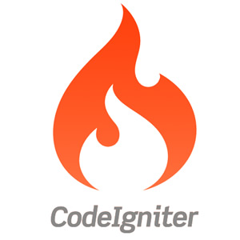
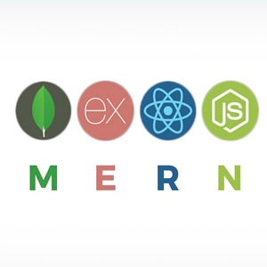

Artigos sobre Codeigniter 2 e 4
O CodeIgniter é um Framework de Desenvolvimento de Aplicativos - um kit de ferramentas - para pessoas que constroem sites usando PHP. Seu objetivo é permitir que você desenvolva projetos muito mais rapidamente do que se estivesse escrevendo código do zero, fornecendo um rico conjunto de bibliotecas para tarefas normalmente necessárias, além de uma interface simples e estrutura lógica para acessar essas bibliotecas. O CodeIgniter permite que você se concentre criativamente no seu projeto, minimizando a quantidade de código necessária para uma determinada tarefa.
Veja as postagens →

Artigos sobre NodeJS, ReactJS e MongoDB
O MEAN é uma pilha de software JavaScript gratuita e de código aberto para a criação de sites e aplicativos dinâmicos. Como todos os componentes da pilha MEAN oferecem suporte a programas gravados em JavaScript, os aplicativos MEAN podem ser gravados em um idioma para os ambientes de execução do servidor e do cliente.
Veja as postagens →